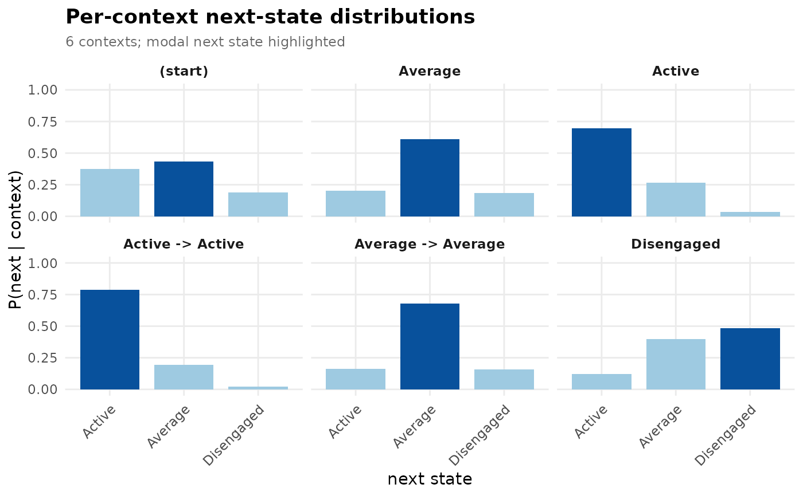
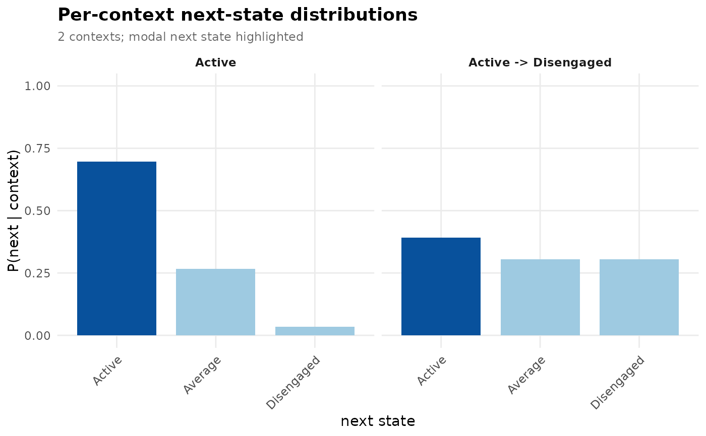

plot_distributions() draws the full next-state distribution
\(P(\mathrm{next} \mid \mathrm{context})\) of selected
contexts as small multiples, one bar chart per context with the most likely
next state in a darker shade. The display shows, for each history, whether
the next state is close to determined (one tall bar) or open (bars of similar
height), and which alternatives remain. By default the most frequent contexts
are shown.
The same probabilities are shown for many contexts at once as a heatmap
by plot_pathways(), and along one history's chain of
shorter suffixes by plot_pruning().
Conditions
transitiontrees_bad_input(error)
treeis not atransitiontreesobject.transitiontrees_empty_result(error) no context is left to plot.
See also
plot_pathways(), plot_pruning();
tree_pathways() for the table of contexts.
Examples
tree <- context_tree(trajectories, max_depth = 2)
plot_distributions(tree, top = 6)

plot_distributions(tree, contexts = c("Active", "Active -> Disengaged"))
